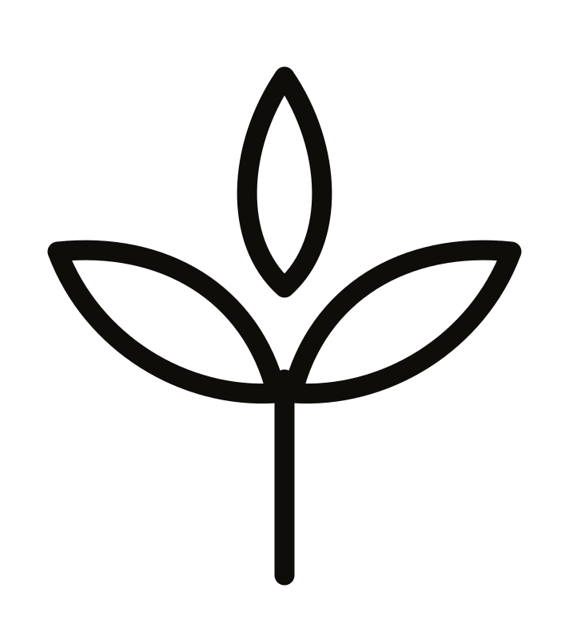

01FEMININE / CONFIDENT / EVERYDAY
Signature Baby Tee
THE
FITTED
A smooth, close-to-you expression. A fitted silhouette with a clean crew neckline and short sleeves.
IvoryTaupeBurgundy

Explore the collectionLÍKAYA / ELEVATED EVERYDAY ESSENTIALS
For the different ways you choose to show up,
express yourself, and become.
CREATE. EXPRESS. BECOME.
THE LÍKAYA SIGNATURE
One person can hold many expressions. Soft. Confident. Relaxed. Always becoming.
LÍKAYA creates elevated everyday essentials that give those expressions room to unfold.
01 / THE PERMANENT CORE
Three silhouettes.
Three fabric experiences.
Three expressions of you.
Signature Baby Tee
A smooth, close-to-you expression. A fitted silhouette with a clean crew neckline and short sleeves.
Signature Square-Neck Tank
A refined, defining expression. A square neckline, medium-width straps, and a body-skimming silhouette.
Signature Oversized Tee
A structured, effortless expression. Balanced oversized proportions, dropped shoulders, and a slightly boxy body.
Collection in development. Product photography, confirmed fabric details, sizing, and availability will follow after sampling.
02 / THE FABRIC DIRECTION
Our three fabric experiences are production targets, pending physical sample validation.
Cotton-stretch single jersey, close to the body.
Fine-rib cotton stretch knit with a refined texture.
Heavyweight combed cotton single jersey, relaxed in shape.
03 / OUR STORY
A person can be soft one day, expressive the next. Relaxed, confident, feminine, grounded, and constantly evolving.
Clothing should give you space to create, express, and become. LÍKAYA turns everyday essentials into different expressions of the same person.
OUR PHILOSOPHY
FIT YOUR MOOD. EXPRESS YOURSELF. BE MORE OF YOU.
Explore your expression